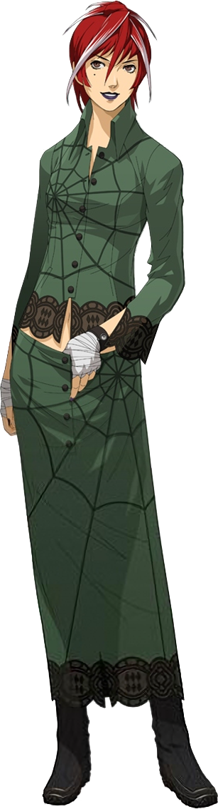
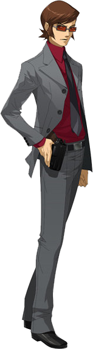
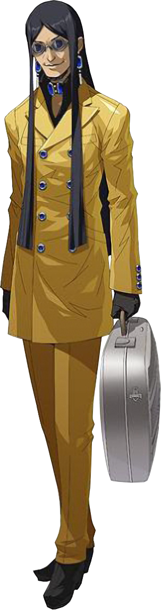

| Persona 2: Eternal Punishment | |
|---|---|

|
|
| Nome original: | ペルソナ２ 罰 |
| Ano de lançamento: | 2000 no Japão e no Ocidente |
| Plataforma(s): | PlayStation, PlayStation 3, PlayStation Portable e PlayStation Vita |
Persona 2: Eternal Punishment
Persona 2: Eternal Punishment, conhecido como Persona 2: Punição no Japão, é o terceiro jogo da série Persona, seguindo Persona 2: Innocent Sin como o segundo capítulo de uma história abrangente.
Foi originalmente lançado no PlayStation e foi lançado na PlayStation Store para PlayStation Portable, PlayStation Vita e PlayStation 3 como um clássico.
Eternal Punishment recebeu um remake no PlayStation Portable, que também foi lançado na PlayStation Store para PlayStation Vita. No entanto, esta versão foi lançada apenas em japonês.
| Contents |
|---|
1. Plot
Eternal Punishment se concentra na protagonista Maya Amano. Eternal Punishment ocorre "do outro lado" de Innocent Sin. Corre o boato de que se você para seu próprio número, o Joker virá e matará quem você pedir. Maya Amano é enviada para escrever uma história sobre o Joker e acaba o encontrando cara a cara. Philemon concede a Maya e seus amigos a habilidade de invocar Personas, uma habilidade que eles usam para caçar Joker.
2. Personagens




